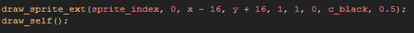

Tutorial
Page 3 of 10
Creating a Surface
If you play the game that we have created for this tutorial, you can see that the player, the enemies and all other objects in the game have shadows. However, the walls do not and that makes the game look odd,
and "flat". Now, to fix that we can do this in the draw event of the wall object:

Which looks like this:
But this looks quite bad and is not at all realistic. We could make it better by repeating the drawing of the wall but with a low alpha so that it gradually fades and also has a feeling of depth by using this code:
Which will look like this:
Now THAT is an improvement! But there are still two problems here... the first and most obvious one is that the shadows are being "clipped" by other wall objects. This is due to the fact that the instances of the
wall object are all at the same depth and so GameMaker cannot guarantee that they will be drawn in a specific order at any time, and we don't want to change their depth either, as that is just too complicated.
Which leads to the second problem... Having so many instances running a loop to draw like that means that if we have 20 wall instances, we are actually drawing them 320+ times! That is extremely
inefficient and makes a simple game like this more likely to lag on devices.
So, what are we going to do? We are going to use a surface to create and draw our wall shadows. this is much more efficient as, after the initial draw calls to create the shadows, it requires only one
draw call to draw the surface each step.
Lets start then by creating a new object and calling it "obj_Shadow_Surface". Give it a depth of -900 (so it is drawn under the wall instances), then give it a create event and add this code:
That variable will hold our surface. We could create it here if we wanted to, but since we need to have a check to see if the surface exists or not (remember, surfaces are volatile!) we shall take advantage of the
check itself to draw the initial shadows. But before that part, we also need to add a Room End Event to clean up at the end of the room. Since surfaces take up memory, if we do not free that memory
when the surface is no longer needed, we end up with a memory leak which will eventually crash your game. So in the Room End Event add this code:

Now we can add the important draw event to our shadow object, and in it place this code:
With the above code your walls now have a beautiful gradient shadow that looks like this:
But what does that code do? Let's see then:
- it checks for the surface
- if it doesn't exist it creates a surface the size of the room and stores it index in the variable "surf"
- it sets the drawing target to the surface
- the surface is then cleared to black, with 0 alpha
- it draws the walls, in black, at different positions and with a low alpha onto the surface
- it resets the drawing target (to draw to the screen)
From that moment on, the surface is then drawn to the screen every step rather than the above code.
Note that the surface is cleared when it is first created, as, since the surface is simply an area of vram that has been set aside, the surface can contain "noise" which may show up when you first use it. So clearing
it in this way "primes" the surface and makes sure that you have no unwanted artifacts when you start to use it normally. Add the new object into the room and give it a test to see how it all looks.
There is one further thing there that I haven't mentioned... The extended blend mode that we have used for drawing to the surface. What is that for? Well, remove it and see what happens! Basically, the
way surfaces work with alpha is that when you draw twice to an area with different alpha values, these over-write each other. So where you may expect two images with alphas of 0.5 to give a final image
with an alpha of approx. 0.75, you will get the final surface having an alpha of 0.5 8the last alpha value drawn to it. This is not a bug and is quite normal, but it means that to draw multiple alpha values and have
the accumulate instead of over-write, we have to use that special extended blend mode.
It's worth noting that this extended blend mode is ideal for overlaying shadows and other grey-scale images, but when dealing with coloured sprites it can be a lot more complicated to pre-multiply the coloured
component of each pixel and so, in general, you will just draw as normal (as you will see on the following page). Keep this in mind whenever you work with surfaces!!!
Click on the Next button to go to the next page of the tutorial.